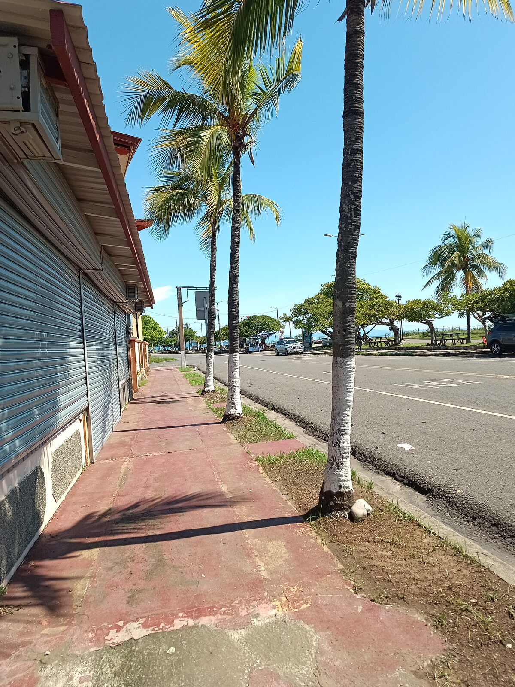
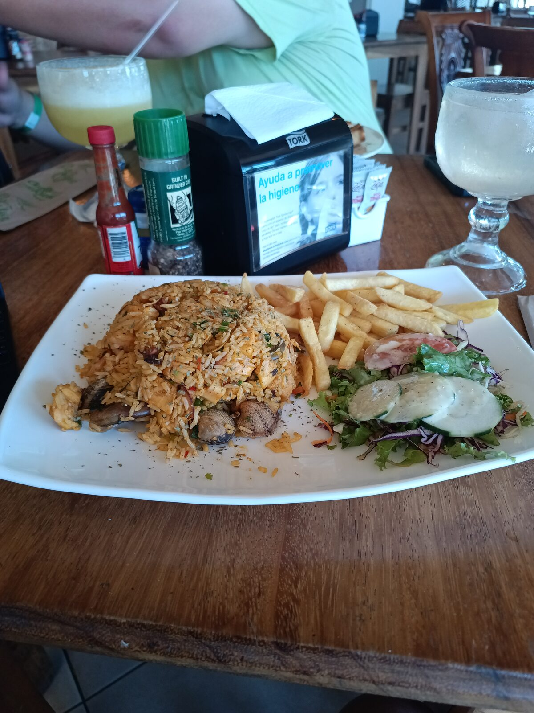
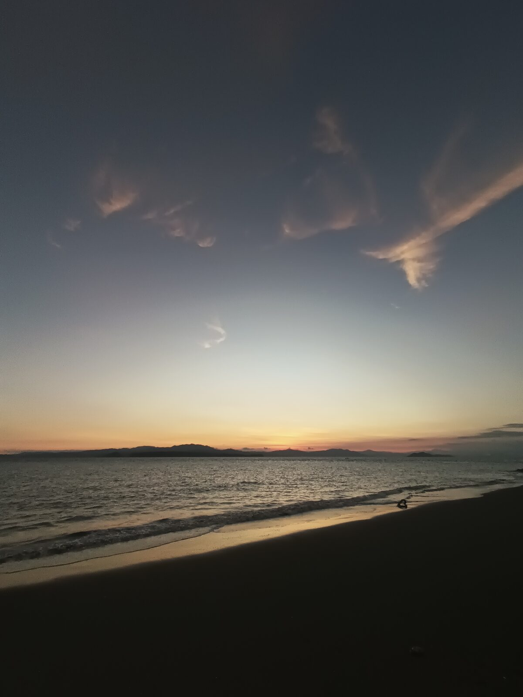

Atardeceres y buena comida
Hoy sí me levanté temprano (temprano para mí, ya saben JAJAJA), porque íbamos a ir al Parque Marino del Pacífico, que además de ser un acuario bonito es un centro de rehabilitación de fauna silvestre. Vi su Instagram y ¡qué belleza!
Llegamos y... CERRADO. No abren los lunes JAJAJAJA.


Así que nos fuimos a almorzar y a trabajar. Estoy armando el reto de BioReto, un hackatón aquí en Costa Rica: una incubadora de bacterias simulada en la que cada equipo tiene que hacer crecer su colonia. Si les interesa, todo está en bioreto.hazloahora.org. Y ajá, ahí se me fue la tarde.


🐱🐱🐱🐱 El almuerzo: 4 de 5 Adas. Muy rico, pero muy caro.
Cuando levanté la cabeza de la compu, Puntarenas nos estaba regalando esto:




Después de esos atardeceres quedamos de cenar con mi amigo Aaron, profesor de Ingeniería en Sistemas de la UCR. Volvimos a El Chicharrón del Coco, porque los tacos de ayer se ganaron la revancha.

¿Qué pasa con la educación en el mundo de la IA?
Nos quedamos hablando de cómo está viviendo él el cambio hacia la IA, y me lo dijo bastante preocupado:
—Diay, mae, yo ya no dejo tareas, porque todo lo hacen con IA.
Que la usen le parece bien; al final la van a usar cuando estén trabajando. Lo que le preocupa es que no entienden la importancia de lo que hay detrás. Nos contó que ha recibido proyectos donde todo funciona, pero cuando les pregunta a los patojos «miren, ¿qué hace esto?» o «a ver, hágame un filtro para esa consulta», no lo saben hacer. Y eso, al final, decepciona.
Por eso ahora guía sus clases para que hagan cosas prácticas: que entiendan cómo se hacen, cómo salen y por qué. Y uno de sus alumnos, muy tranquilo, le preguntó: «¿Y pa' qué quiero aprender?» JAJAJAJA.
Todo eso me regresó a la mente las quejas de mis amigos catedráticos y la crisis que tuve a principios de este 2026. Cuando empecé a usar la IA me voló el cerebro, y pensé: ¿para qué voy a seguir dando clases, talleres y conferencias, si todo está a un prompt de distancia y lo va a explicar mejor y con toda la paciencia del mundo? Cualquiera puede hacerlo.
Pero resulta que existe algo que se llama facilución, un concepto de las personas con altas capacidades: creemos que todo es fácil. Lo cual no es CIERTOOO, pero lo creemos JAJAJA. Así que me puse a ponerlo todo a prueba y a consultarlo con muchos colegas, y resulta que cada quien enseña y se involucra con la enseñanza a su manera. Hasta escuché de gente que lo hace para sentirse querida y de otra que lo hace por sentirse importante, puro ego, que también es válido.
Esa crisis me enseñó que lo realmente importante de enseñar y aprender son los sentimientos. Claude y ChatGPT pueden tener toda la información del mundo, pero si no hay emociones de fondo, no hay aprendizaje. Lo que importa es la interacción humana: que haya gente involucrada inspira, y eso puede marcar el futuro de alguien. Con eso salí de la crisis.
Así que les dejo la pregunta: ¿qué profe les enseñó algo que ningún prompt les hubiera podido enseñar?
👆 Toca o haz clic en cualquier punto del mapa para leer el capítulo de ese día.